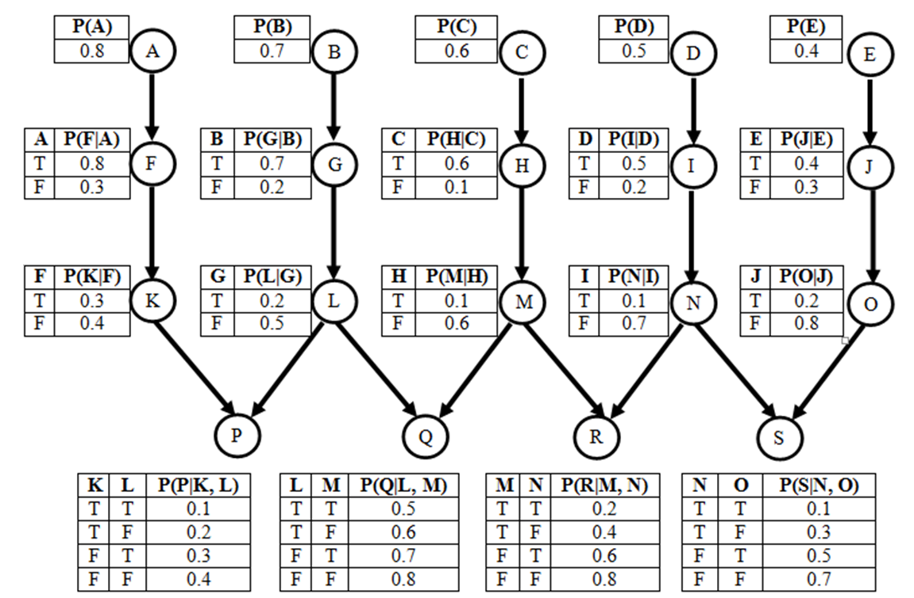

Assignment 4
Written Assignment - Planning, Probablity & Bayesian Networks.
Max possible score:
- 4308: 100 Points (+10 Points EC)
- 5360: 100 Points (+10 Points EC)
Task 1 (18 Points (+10 Points EC))
Consider the following scenario:
 Figure 1: Marble Moving Problem.
Figure 1: Marble Moving Problem.
Your task is to get all the blue marbles in P1 and red marbles in P2
The actions available are as follows:
- You can move 2 marbles from P1 to P2 if they are each of
different colors (one blue or one red)
- You can move 2 marbles from P2 to P1 if they are of the same
color (either you can move 2 red or you can move 2 blue)
Give the PDDL description to represent the above as a Planning Problem.
Do not forget to also define and describe the predicates and constants
that your are going to use.
Extra Credit (10 pts): Also,
give a complete plan (using the actions described) for getting
from the start to the goal state
Task 2 (10 Points)
Suppose that we are using PDDL to describe facts and actions in a
certain world called JUNGLE. In the JUNGLE world there are 4
predicates, each predicate takes at most 3 arguments, and there are 5
constants. Give a reasonably tight bound on the number of unique states
in the JUNGLE world. Justify your answer.
Task 3 (15 Points)
Consider
the given joint probabilty distribution for a domain of two variables
(Color, Vehicle) :
|
Color = Red
|
Color = Green
|
Color = Blue
|
Vehicle = Car
|
0.0630
|
0.1080
|
0.1290
|
Vehicle = Van
|
0.0441
|
0.0756
|
0.0903
|
Vehicle = Truck
|
0.0504
|
0.0864
|
0.1032
|
Vehicle = SUV
|
0.0525
|
0.0900
|
0.1075
|
Part a: Calculate P ( Color is
not Green | Vehicle is Truck ) by Inference by Enumeration
Part b: Are Vehicle and
Color totally independant from each other? Justify.
Task 4 (12 Points)
In
a certain probability problem,
we have 12 variables: A, B1,
B2,
..., B10,
C.
- Variable A has 8 possible values.
- Each of variables B1, ..., B10 have 5
possible values. Each Bi is
conditionally indepedent of all other 9 Bj variables
(with j != i) given A.
- Variable C has 6 possible values. Variable C is totally
independant of all other variables in the domain.
Based
on these facts:
Part
a: How
many numbers do you need to store in the joint distribution table of
these 12 variables?
Part
b: What
is the most space-efficient way (in terms of how many numbers you need
to store) representation for the joint probability distribution of
these 12 variables? How many numbers do you need to store in your
solution?
Task
5 (10 Points)
Note: This is
a
ABET Assesment Task
George
doesn't watch much TV in the evening, unless there is a baseball game
on. When there is baseball on TV, George is very likely to watch.
George has a cat that he feeds most evenings, although he forgets every
now and then. He's much more likely to forget when he's watching TV.
He's also very unlikely to feed the cat if he has run out of cat food
(although sometimes he gives the cat some of his own food). Design a
Bayesian network for modeling the relations between these four events:
- baseball_game_on_TV
- George_watches_TV
- out_of_cat_food
- George_feeds_cat
Your
task is to connect these nodes with arrows pointing from causes to
effects. No programming is needed for this part, just include an
electronic document (PDF, Word file, or OpenOffice document) showing
your Bayesian network design.
Task
6 (10 Points)
Note: This is
a
ABET Assesment Task
For
the Bayesian network of previous task, the text file at
this link contains
training data from every evening of an entire year. Every line in this
text file corresponds to an evening, and contains four numbers. Each
number is a 0 or a 1. In more detail:
Based
on the data in this file, determine the probability table for each node
in the Bayesian network you have designed for Task 5. You need to
include these four tables in the drawing that you produce for Task 5.
You also need to submit the code/script that computes these
probabilities.
Task
7 (10 Points)
Note: This is
a
ABET Assesment Task
Given the network obtained in the previous two tasks, calculate P
( Baseball Game on TV | not(George Feeds Cat) ) using Inference by
Enumeration
Task 8 (15 Points)

Figure 2: A Large Bayesian
Network.
Part a: On the
network shown in Figure 2, what is the Markov blanket of node N?
Part
b: On
the network shown in Figure 2, what is P(I, D)? (Note: You can use
simplified calculations to calculate this as long as it is justified)
Part
d: On
the network shown in Figure 2, what is P(M, not(C) | H)? (Note: You can
use simplified calculations to calculate this as long as it is
justified)